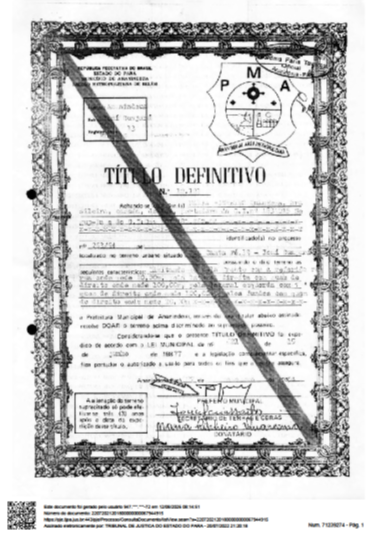
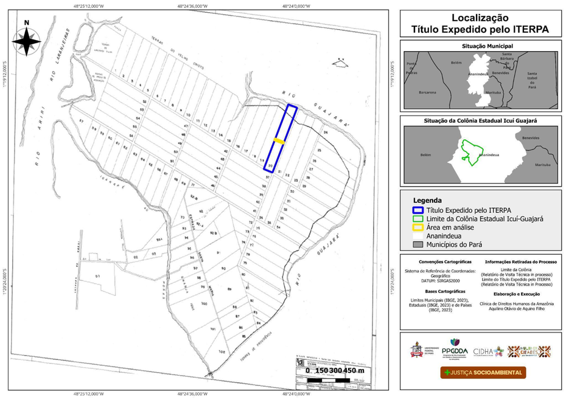

Casos de Atuação da CIDHA
A equipe multiprofissional da CIDHA atua diretamente em litígios fundiários e socioambientais emblemáticos no Pará, fornecendo subsídios técnicos de alta precisão ao Sistema de Justiça.
Sobreposição Dominial Urbana e Rural
Trata-se de um conflito fundiário em ação de reintegração de posse em área urbana no município de Ananindeua, Pará. O litígio iniciou-se em 2009 e envolve 19 famílias. O caso foi recebido pela CIDHA em meados de agosto de 2026.
-
Metodologia Aplicada: Não houve necessidade de visita física à comunidade; os trabalhos concentraram-se na rigorosa análise de títulos de propriedade, cadeia dominial cartorária e imagens de satélite multitemporais.
-
Diagnóstico Pericial: Identificou-se conflito de titulação urbana municipal sobreposta à titulação rural emitida pelo ITERPA sobre o Lote nº 20 da antiga Colônia Estadual Icuí Guajará.
-
Complexidade Territorial: Compreensão do processo acelerado de expansão urbana da Região Metropolitana de Belém sobre antigos parcelamentos rurais estaduais.
-
Entrega Concluída: Elaboração e entrega da Nota Técnica à Comissão de Mediação de Conflitos em 15 de outubro de 2026.



Vistoria Técnica Interinstitucional & Cartografia Social
Área de litígio complexo localizada em baixada alagadiça no bairro do Miramar, em Belém, Pará (Passagem Tel Aviv e Rua Canal São Joaquim – 1°25'S 48°29'W). A comunidade conta com centenas de famílias em situação de vulnerabilidade socioeconômica e habitacional.
-
1ª Visita Técnica (14/09/2026): Comandada pelo Juiz Dr. Andrey Magalhães Barbosa (Juiz de Direito e Membro da Comissão de Soluções Fundiárias do TJPA), com participação de representantes da Prefeitura de Belém, Defensoria Pública do Estado (DPE-PA), Ministério das Cidades, Secretaria de Patrimônio da União (SPU) e equipe técnica da CIDHA.
-
2ª Visita Técnica (06/10/2026): Levantamento de dados qualitativos socioeconômicos e escuta direta dos moradores reunidos em assembleia na quadra esportiva da comunidade.
-
Cartografia Aérea por Drone: Ortofotomosaico georreferenciado detalhando todo o arruamento (Rua Tel Aviv, Rua dos Mandamentos, Rua Terra Prometida, Rua Rei Salomão, Passagem Josué) e pontes de madeira.
-
Análise Fundiária: Cruzamento de registros de cartórios de imóveis e da Secretaria de Patrimônio da União (SPU) para elaboração da Nota Técnica definitiva.